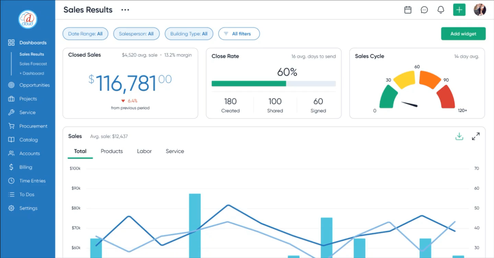
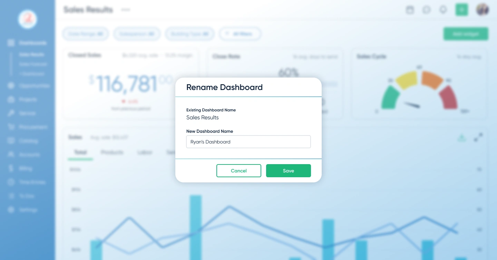

Custom Dashboards & AI Summaries
D-Tools Cloud shipped with a static dashboard that showed field technicians, project managers, and company owners the exact same charts. Because it didn't answer anyone's daily questions, teams ignored it and exported raw CSVs every Monday morning. I redesigned the workspace around role-based starter templates and one-click AI summaries tied to on-screen metrics, driving 62% multi-dashboard adoption and a 71% sustained lift in weekly views.

The Problem: Trapped in Static Spreadsheets
For a 10-person residential AV shop loading vans at 7:00 AM, high-level sales gauges were useless clutter. For a commercial contractor tracking $2M bids, daily service ticket counts got in the way. Meanwhile, leadership wanted to jump straight to a conversational AI chatbot. My job was to solve the immediate reporting pain first and channel the AI push into something operators would actually trust with their job margins.
Goals
- Give each role (Field Dispatch, Sales, Accounting) a starter template that answers morning questions in under 30 seconds
- Let users resize, filter, and save multiple dashboard views without feeling like they are configuring a complex BI tool
- Keep AI summaries strictly tied to the numbers visible on screen so financial data never hallucinates
Research Insights
To understand why teams abandoned existing analytics, I led 10 semi-structured discovery interviews: 6 with active power users (integrator ops managers, project leads, and accounting controllers) and 4 with internal stakeholders across sales engineering and customer success.
Research Findings
-
Finding 1
Core insight: Users either ignored dashboards entirely or exported raw numbers into Monday Excel sheets.
-
Finding 2
Workflow friction: Operators needed fast routines: customizing a morning view couldn't feel like building a report from scratch.
-
Finding 3
Sales constraint: Sales reps needed immediate visual punch for live demos to win enterprise clients.
Design Decisions
-
Decision 1
Role-based templates: Replaced static layouts with starter templates matching specific daily routines.
-
Decision 2
Fast card manipulation: Drag-and-drop rearrangement and 1-click AI summaries from active widgets.
-
Decision 3
Demo-ready views: Pre-populated executive layouts that sales could pull up instantly during discovery calls.
Design Approach & Decisions
-
1. Responsive 12-Column Widget Grid
Rather than building isolated reporting pages, I designed a modular 12-column grid supporting three widget sizes: a 1x1 counter, 2x2 trend chart, and 3x2 data table. Users could start from a role-specific template or a blank canvas, dragging and configuring cards to match their morning routine.
To keep pages fast under heavy data loads, each widget paginates and fetches its own data independently.
-
2. Grounded AI Summaries
Project managers don't trust AI guesses when job margins and billable hours are on the line. I worked with backend engineering so the summary only reads the data returned by the active widgets on the user's screen, never running open-ended database queries.
Every bullet in the summary links directly back to its source card so controllers can check the underlying numbers in one click.
Defining Decision: Dashboards Before AI
Leadership originally wanted to skip visual dashboards and build a chat prompt interface. In usability tests, however, operators froze when faced with a blank chat box. AV integrators don't log in at 7:00 AM to write prompts. They need an immediate visual scan of overdue shipments and schedule conflicts before vans roll out at 7:30 AM.
That testing convinced leadership to keep visual cards as the primary morning workspace and use AI strictly as a one-click report writer for weekly owner meetings:
The Morning Dashboard: Field managers glance at verified numbers at 7:00 AM without having to formulate an open prompt.
"Morning dispatch brief: There are 14 open tickets, including 3 escalations. All 8 deliveries are on schedule. Gross margin is 31.4% and is trending down week over week."
The AI Summary: Highlights are tied strictly to the active charts on screen, so users can compare them directly with the source numbers.
Execution Constraints: Managing Without a Design System
Without a full design system in place yet, every new widget risked becoming a one-off React component. I defined a shared 12-column grid, 16px spacing tokens, and standard skeleton loaders so cards wouldn't jump around as queries finished. Those patterns later became the foundation for the 100+ production components we scaled across D-Tools Cloud.
Permissions and speed: Role-based security and caching
Field technicians logged in at 7:00 AM to check job stages and van dispatches, but company owners barred installers from viewing gross margins or labor rates. Because permissions were user-configured by administrators rather than locked behind pricing tiers, cards tied to restricted financial metrics simply didn't render for unauthorized users. Shared dashboards reflowed cleanly without empty placeholder boxes or permission warning clutter, while engineering added role-scoped Redis caching to keep load times under 400ms.
Prototyping & Validation
Iteration: higher data density, tighter control
I tested the interactive Figma prototype with five target users. Integrators immediately rejected our early airy wireframes. They wanted compact counters (unassigned service calls, overdue milestones, low-stock flags) docked at the top of the screen above trend charts. Adding a compact 1x1 stat card and drag-and-drop reordering took one extra sprint, but turned the dashboard into a daily second-monitor workspace.
- 4/5 users said the role templates matched how they already organized their week
- All 5 participants customized and saved a new dashboard without prompting
Those sessions gave us the confidence to cut custom formula builders from the initial release and focus engineering time on grid speed and reliability.
Impact: Replacing Weekly Exports with Daily Habit
Measured at 30 and 60 days post-launch, 62% of active accounts maintained multiple custom dashboards, and weekly dashboard views rose 71% across consecutive quarters.
Users applied an average of 2.4 custom filter rules per card (by job phase, technician, or warehouse location). Usage data also showed a clear split in daily habits: visual charts peaked between 6:45 AM and 8:15 AM as managers routed field crews, while AI summary usage surged at month-end and quarter-close when leads compiled owner reports.

Lesson
Executive excitement for conversational AI rarely matches how field operators actually work. Integrators managing tight schedules and thin margins don't want to chat with their software; they want fast, reliable numbers they can scan at 7:00 AM and a one-click summary when it's time to brief the owner.
What's Next
Next on the roadmap: scheduled Monday morning email digests and cross-location template sharing so multi-office commercial integrators can standardize KPIs across branches.